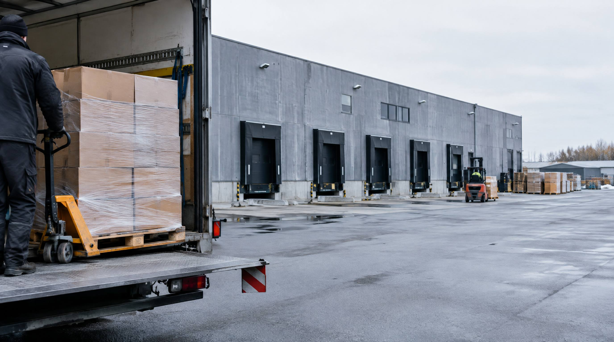

Ét centralt lager er enkelt at styre. Det holder, lige indtil halvdelen af pakkerne skal tværs over landet hver dag. Her er de signaler du kan måle på, og måden at regne på om et lager nummer to betaler sig.
Hvad er flere lagerlokationer?
Flere lagerlokationer betyder, at din beholdning er fordelt på to eller flere fysiske adresser. Det kan være:
- Regionalt fordelt: Lager i Jylland og Sjælland for kortere leveringstid
- 3PL-supplement: Eget lager og outsourcet fulfillment-partner til overløb
- Funktionelt opdelt: Bulkvarer ét sted, hurtigvarer et andet
- Internationalt: Dansk lager og lager i udlandet for udenlandske markeder
👉 Skalerer din webshop? Se hvordan SmartPack understøtter vækst
Hvornår er det et problem at have ét lager?
Et enkelt lager skaber problemer, når:
- Leveringstid er konkurrenceulempe, kunder i Jylland taber 1-2 dage vs. konkurrenter med lokalt lager
- Kapaciteten er maxed, du kan ikke fysisk håndtere mere volumen på ét sted
- Fragtudgifter dominerer, høj pris per forsendelse pga. afstand til slutkunde
- Black Friday kræver 6× kapacitet, ét lager kan ikke skalere det, men to lager og 3PL kan
- Du sælger internationalt, toldregler og leveringstid gør lokalt lager i markedet nødvendigt
Hvorfor det er vigtigt, i kroner
Regnestykke: 500 ordrer/dag, 60% Sjælland, 40% Jylland
| Post | Sådan finder du tallet |
|---|---|
| Fragt i dag | Jeres egen gennemsnitspris per ordre, taget fra fragtregningen, ikke fra prislisten |
| Fragt med to lagre | Bed fragtmanden om prisen på de kortere strækninger, og gang med den andel af ordrerne der faktisk flytter |
| Husleje og drift | Tilbud på kvadratmeterne, plus el, varme, forsikring og rengoering |
| Ekstra bemanding | En halv plukker er 240.000 kr. om året ved 300 kr. i timen og 1.600 produktive timer |
| Systemet | Spørg jeres nuværende leverandør, om to lokationer kan håndteres, og hvad det koster |
De to første linjer afgør alt, og dem er der ingen der kan give jer udefra. Sparer I 10 kr. per ordre på 125.000 ordrer, er det 1.250.000 kr. om året, og så skal husleje og bemanding trækkes fra. Sparer I 3 kr., er det 375.000 kr., og så holder det sjældent. Regn begge dele igennem, før I kigger på lokaler.
Det opdager de fleste for sent
Scenarie 1: åbner Jylland-lager uden WMS
Webshoppen åbner lager i Aarhus og styrer begge fra hvert sit regneark. Uge 2 sælger de en vare der kun står på Sjælland, men ordren bliver tildelt Aarhus. Den forsinkes tre dage, og kunden annullerer. Uge 4 er der en håndfuld af den slags hver dag. Problemet er ikke det andet lager. Det er at ingen af dem ved hvad den anden har på hylden.
Scenarie 2: Venter for længe
Webshoppen ligger på 420 ordrer om dagen, og 45 procent af kunderne bor i Jylland. Det er 189 pakker om dagen på den lange tur. Koster den 20 kr. mere end den korte, er det 945.000 kr. om året ved 250 arbejdsdage. Koster den 8 kr. mere, er det 378.000 kr. Slå jeres eget tal op, før I regner videre.
Typiske fejl
- åbner nyt lager uden WMS, to lagre styret i Excel er opskriften på lagerubalancer, dobbeltforsendelser og utilfredse kunder.
- Splitter forkert sortiment, overvej hvad der skal ligge hvor baseret på efterspørgsel. A-varer begge steder. B/C-varer kun ét sted.
- Undervurderer operationel kompleksitet, to lagre kræver dobbelt ledelse, dobbelt oplæring og dobbelt vedligehold.
Sådan gør du det rigtigt
- Analysér kundedistribution, brug ordrernes postnumre til at kortlægge, om et ekstra lager reelt reducerer leveringstid og fragtomkostning markant.
- Start med 3PL, ikke eget lager, test markedet med en eksisterende 3PL-operatør, inden du investerer i lokale kvadratmeter.
- Kræv realtidsintegration, dit WMS skal opdatere beholdningen på tværs af lokationer i realtid. Ingen manuelle Excel-overførsler.
SmartPacks understøttelse
SmartPack understøtter multi-location lagerstyring med realtids-synkronisering på tværs af lokationer. Systemet tildeler ordrer til den mest optimale lokation baseret på distance, beholdning og kapacitet, og advarer dig, hvis du er ved at sælge en vare der kun findes ét sted. Integration med 3PL-partnere sker via API. Uden WMS er to lagre en risiko. Med SmartPack er det en konkurrencefordel.